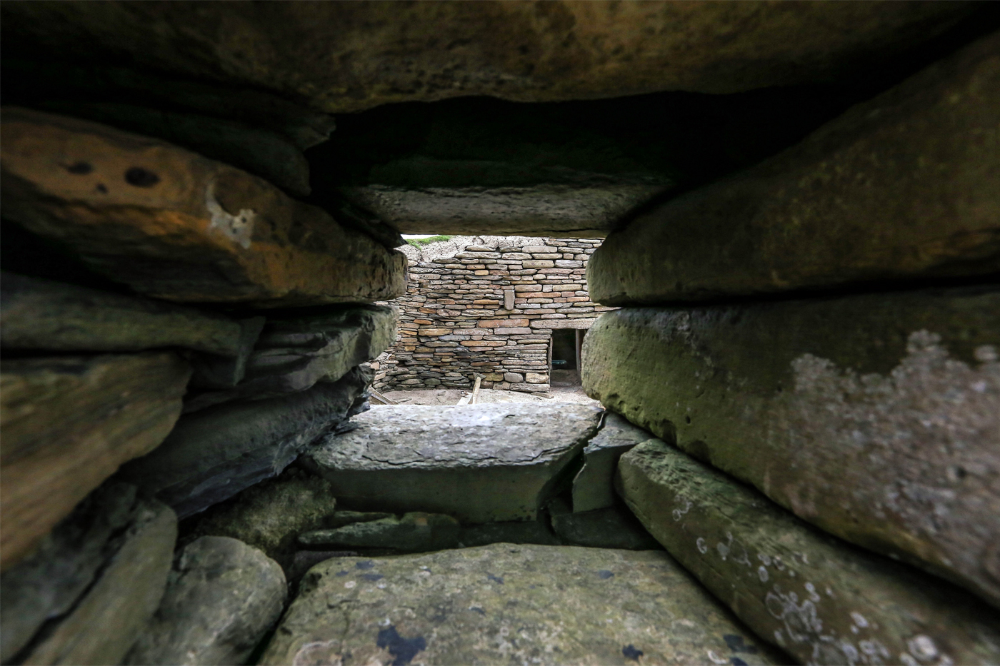

SKAROS | inboutique.lt
 +370 65534188 • info@inboutique.lt Prisijungti • Registruotis • Norų sąrašas ( 0 ) • Užsakymas Prekių: 0 - Suma: 0,00 € Nėra užsakomų prekių! MENU KŪRĖJAI MARIE LAURE CHAMOREL RICCARDO GOTI 5 OCTOBRE HANKA_IN VERDEAGUA-ALHAJAS RITA MERLINI VIVE LA DIFFERENCE INOUITOOSH CASHA EXQUISITE J GI'N'GI MAZZOLENI GLOVES ZATSU GILBERT GILBERT ANA MAISON CATHERINE OSTI + PAPUOŠALAI Apyrankės Auskarai + Auskarai su deimantais Auskarai su perlais Kaklo papuošalai Segės Žiedai Sukaktuvių dovanos + SKAROS Skaros ir šaliai Pledai, pončai ir šalikai + RANKINĖS Kuprinės Rankinės Delninės Piniginės + KITOS PREKĖS Kepurės ir Skrybėlės + Skrybėlės Kepurės Kvepalai Pirštinės + Ilgos pirštinės Trumpos pirštinės Diržai Avalynė Rankogaliai ir apykaklaitės Tunikos-suknelės + SALE + Kontaktai + Pradžia SKAROS . AUTORINĖ JUVELYRIKA KŪRĖJAI + MARIE LAURE CHAMOREL RICCARDO GOTI 5 OCTOBRE HANKA_IN VERDEAGUA-ALHAJAS RITA MERLINI VIVE LA DIFFERENCE INOUITOOSH CASHA EXQUISITE J GI'N'GI MAZZOLENI GLOVES ZATSU GILBERT GILBERT ANA MAISON CATHERINE OSTI PAPUOŠALAI + Apyrankės Auskarai + Auskarai su deimantais Auskarai su perlais Kaklo papuošalai Segės Žiedai Sukaktuvių dovanos SKAROS - Skaros ir šaliai Pledai, pončai ir šalikai VISOS RANKINĖS + Kuprinės Rankinės Delninės Piniginės KITOS PREKĖS + Kepurės ir Skrybėlės + Skrybėlės Kepurės Kvepalai Pirštinės + Ilgos pirštinės Trumpos pirštinės Diržai Avalynė Rankogaliai ir apykaklaitės Tunikos-suknelės VERSLO DOVANOS Išvalyti Kaina Kategorija Skaros ir šaliai (55) Gamintojas
SKAROS
Skarų ryšėjimo istorija datuojama dar nuo antikinės Romos laikų. Lino skaros, vadinamos "sudarium" (lot. kalbos terminas "prakaitošluostė"), buvo naudojamos vyrų tarpe, ryšint ant kaklo ar tvirtinant prie diržo. Žinoma šį apdarą greitai pamėgo moterys, kuris tapo tiesiog madingu aksesuaru. Skaros ir šaliai neatsiejama stilingos moters įvaizdžio dalis. Skara – tai vienintelis makiažas, kurio nereikia nuvalyti. Žiemą jos šildo ir pagyvina paltą. Skaros tinka ir prie klasikinio įvaizdžio, ir kasdieniuose deriniuose. Joks kitas aksesuaras nesuteikia tiek ryškumo įprastiems drabužiams (lietpalčiui, vyriškam švarkui, odinei striukei...). Vasarą tinka plona plati skara, ją galima dėvėti kaip skraistę ar kaip suknelę su apnuoginta nugara, gražu ploną skarą apsisiausti ir apsisegti diržu, taip ji tarsi virsta suknelės dalimi.
Skaras ir šalius galima apjuosti aplink kaklą ir derinti prie fanko stiliaus drabužių kaip septintajame dešimtmetyje, ryšėti vietoj galvos juostos, kurti čigonišką stilių, priderinant didelius ryškius auskarus, arba apsivynioti skara riešą.
Kviečiame apžiūrėti skaras internetu, arba salone Kaune, adresu M.Valančiaus g. 10-2.
Prekių palyginimas (0) Rodyti: 24 25 50 75 100 Rikiuoti pagal: ----------- Pavadinimas A - Ž Pavadinimas Ž - A Kaina mažiausia didžiausia Kaina didžiausia mažiausia Kodas A - Ž Kodas Ž - A Pridėti prie norų sąrašo Palyginti Exquisite J vilnos skara Exquisite J rankomis tapyta vilnos skara Sudėtis: 28% alpakos vilna, 28% mohera, 24% vilna,.. 225,00 € be PVM: 185,95 € Į krepšelį Pridėti prie norų sąrašo Palyginti Pridėti prie norų sąrašo Palyginti Exquisite J vilnos skara Exquisite J rankomis tapyta vilnos skara Sudėtis: 28% alpakos vilna, 28% mohera, 24% vilna,.. 225,00 € be PVM: 185,95 € Į krepšelį Pridėti prie norų sąrašo Palyginti Pridėti prie norų sąrašo Palyginti Inouitoosh šilko skara AVENTURE FUCHSIA Inouitoosh šilko skara AVENTURE FUCHSIA Rankomis marginta šilko skara. Sudėtis: 100% šilkas. .. 195,00 € be PVM: 161,16 € Į krepšelį Pridėti prie norų sąrašo Palyginti Pridėti prie norų sąrašo Palyginti Inouitoosh šilko ir modalo skara GALLINACE VERT Inouitoosh rankomis marginta šilko ir modalo skara GALLINACE VERT Sudėtis: 52% šilkas, 48% .. 186,00 € be PVM: 153,72 € Į krepšelį Pridėti prie norų sąrašo Palyginti Pridėti prie norų sąrašo Palyginti Inouitoosh šilko ir modalo skara GALLINACE ROSE BOISE Inouitoosh rankomis marginta šilko ir modalo skara GALLINACE ROSE BOISE Sudėtis: 52% šilkas.. 186,00 € be PVM: 153,72 € Į krepšelį Pridėti prie norų sąrašo Palyginti Pridėti prie norų sąrašo Palyginti Inouitoosh vilnos, kašmyro, šilko skara HISTOIRE BLEU MARINE Inouitoosh vilnos,kašmyro, šilko skara HISTOIRE BLEU MARINE Sudėtis: 50% vilna, 20% kašmyras, 30%.. 295,00 € be PVM: 243,80 € Į krepšelį Pridėti prie norų sąrašo Palyginti Pridėti prie norų sąrašo Palyginti Inouitoosh vilnos, kašmyro, šilko skara HISTOIRE PRUNE Inouitoosh vilnos,kašmyro, šilko skara HISTOIRE PRUNE Sudėtis: 50% vilna, 20% kašmyras, 30% šilka.. 295,00 € be PVM: 243,80 € Į krepšelį Pridėti prie norų sąrašo Palyginti Pridėti prie norų sąrašo Palyginti Inouitoosh vilnos, kašmyro, šilko skara HISTOIRE JAUNE Inouitoosh vilnos,kašmyro, šilko skara HISTOIRE JAUNE Sudėtis: 50% vilna, 20% kašmyras, 30% šilka.. 295,00 € be PVM: 243,80 € Į krepšelį Pridėti prie norų sąrašo Palyginti Pridėti prie norų sąrašo Palyginti Inouitoosh vilnos, kašmyro, šilko skara STANISLAS ECUREUIL Inouitoosh vilnos,kašmyro, šilko skara STANISLAS ECUREUIL Sudėtis: 85% vilna, 7,5% kašmyras, 7,5%.. 186,00 € be PVM: 153,72 € Į krepšelį Pridėti prie norų sąrašo Palyginti Pridėti prie norų sąrašo Palyginti Inouitoosh vilnos, kašmyro, šilko skara STANISLAS VERT Inouitoosh vilnos,kašmyro, šilko skara STANISLAS VERT Sudėtis: 85% vilna, 7,5% kašmyras, 7,5% šil.. 186,00 € be PVM: 153,72 € Į krepšelį Pridėti prie norų sąrašo Palyginti Pridėti prie norų sąrašo Palyginti Inouitoosh vilnos ir kašmyro skara LIEVRE VERT Inouitoosh vilnos ir kašmyro skara LIEVRE VERT Rankomis marginta vilnos ir kašmyro skara. Sudė.. 186,00 € be PVM: 153,72 € Į krepšelį Pridėti prie norų sąrašo Palyginti Pridėti prie norų sąrašo Palyginti Inouitoosh vilnos ir kašmyro skara LIEVRE MANDARINE Inouitoosh vilnos ir kašmyro skara LIEVRE MANDARINE Rankomis marginta vilnos ir kašmyro skara. .. 186,00 € be PVM: 153,72 € Į krepšelį Pridėti prie norų sąrašo Palyginti Pridėti prie norų sąrašo Palyginti Inouitoosh vilnos skara GROSSE TRUFFE PRUNE Inouitoosh vilnos skara GROSSE TRUFFE PRUNE Rankomis marginta plonytė skara. S.. 150,00 € be PVM: 123,97 € Į krepšelį Pridėti prie norų sąrašo Palyginti Pridėti prie norų sąrašo Palyginti Inouitoosh vilnos skara GERMAIN NATUREL Inouitoosh vilnos skara GERMAIN NATUREL Rankomis marginta plonytė skara. Sudėt.. 138,00 € be PVM: 114,05 € Į krepšelį Pridėti prie norų sąrašo Palyginti Pridėti prie norų sąrašo Palyginti Inouitoosh vilnos skara ABERDEEN JAUNE Inouitoosh vilnos skara ABERDEEN JAUNE Rankomis marginta plonytė skara. Sudėti.. 138,00 € be PVM: 114,05 € Į krepšelį Pridėti prie norų sąrašo Palyginti Pridėti prie norų sąrašo Palyginti Inouitoosh vilnos skara ABERDEEN BLEU Inouitoosh vilnos skara ABERDEEN BLEU Rankomis marginta plonytė skara. Sudėtis.. 138,00 € be PVM: 114,05 € Į krepšelį Pridėti prie norų sąrašo Palyginti Pridėti prie norų sąrašo Palyginti Inouitoosh vilnos skara MONSIEUR BON POUDRE Inouitoosh vilnos skara MONSIEUR BON POUDRE Rankomis marginta plonytė skara. S.. 138,00 € be PVM: 114,05 € Į krepšelį Pridėti prie norų sąrašo Palyginti Pridėti prie norų sąrašo Palyginti Inouitoosh vilnos skara MONSIEUR BON FUCHSIA Inouitoosh vilnos skara MONSIEUR BON FUCHSIA Rankomis marginta plonytė skara. .. 138,00 € be PVM: 114,05 € Į krepšelį Pridėti prie norų sąrašo Palyginti Pridėti prie norų sąrašo Palyginti Inouitoosh vilnos skara MONSIEUR BON MARRON Inouitoosh vilnos skara MONSIEUR BON MARRON Rankomis marginta plonytė skara. S.. 138,00 € be PVM: 114,05 € Į krepšelį Pridėti prie norų sąrašo Palyginti Pridėti prie norų sąrašo Palyginti Inouitoosh vilnos skara EX LIBRIS BLEU MARINE Inouitoosh vilnos skara EX LIBRIS BLEU MARINE Rankomis marginta plonytė skara. .. 135,00 € be PVM: 111,57 € Į krepšelį Pridėti prie norų sąrašo Palyginti Pridėti prie norų sąrašo Palyginti Inouitoosh vilnos, medvilnės ir akrilo skara ROX CORAIL Inouitoosh vilnos, medvilnės ir akrilo skara ROX CORAIL Rankomis marginta plonytė skara.&nbs.. 135,00 € be PVM: 111,57 € Į krepšelį Pridėti prie norų sąrašo Palyginti Pridėti prie norų sąrašo Palyginti Inouitoosh vilnos, modalo ir viskozės skara CAMILLE RODIN VERT Inouitoosh vilnos, modalo ir viskozės skara CAMILLE RODIN VERT Rankomis marginta plonytė ska.. 126,00 € be PVM: 104,13 € Į krepšelį Pridėti prie norų sąrašo Palyginti Pridėti prie norų sąrašo Palyginti Inouitoosh vilnos skara FABLE SAFRAN Inouitoosh vilnos skara FABLE SAFRAN Rankomis marginta plonytė skara. Sudėtis:.. 115,00 € be PVM: 95,04 € Į krepšelį Pridėti prie norų sąrašo Palyginti Pridėti prie norų sąrašo Palyginti Inouitoosh vilnos skara YAKO FRAMBOISE Inouitoosh vilnos skara YAKO FRAMBOISE Rankomis marginta plonytė skara. S.. 126,00 € be PVM: 104,13 € Į krepšelį Pridėti prie norų sąrašo Palyginti 1 2 3 | Prekių: 55 | Rodoma: 1-24 | Puslapių: 3 1.800.555.8989 123 Fashion Ave. NY, 10010
Kur mus rasti?
Parduotuvės adresas:
M.Valančiaus g. 10-2, Kaunas
Darbo laikas:
I-V 10-18
VI 11-16
VII nedirbame
Kontaktai
+370 68255881 info@inboutique.lt Susisiekite su mumisInformacija
Pristatymo informacija Privatumo politika Sąlygos ir taisyklės Pradžia Pareiškimas apie slapukusKlientams
Grąžinimai Užsakymų istorija Pirkti dovanų čekįNaujienlaiškis
Siųsti © El. parduotuvės sprendimas: ParduotuvesNuoma.lt